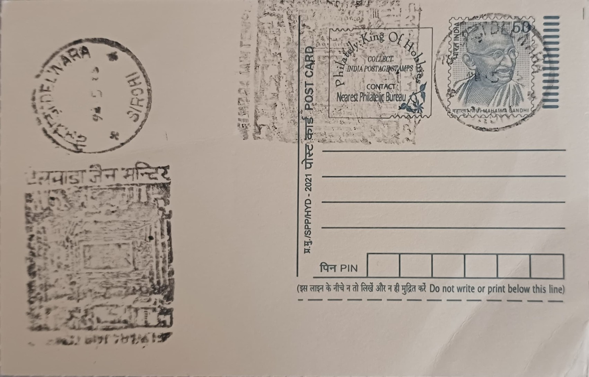

Delwara Jain Temple
देलवाड़ा जैन मंदिर


The name Dilwara, by which the temple complex near Mount Abu in Sirohi district is popularly known, is believed to derive from "Devalwada" or "Devkulvada," a term referring to a cluster of temples, though the site is also recorded locally as Delwara. Nestled among the granite hills of the Aravalli range at an elevation of roughly 1,100 metres, the temples were deliberately built with plain, unadorned exteriors, a choice consistent with the austere Jain monastic ideal that outward ostentation be avoided even while the interior is devoted entirely to artistic and devotional expression.
The complex belongs to the Maru-Gurjara school of temple architecture and comprises five principal shrines dedicated to different Jain Tirthankaras, making it one of the foremost pilgrimage and architectural centres of Jainism in India. Its significance rests on a dual identity: it functions as an active place of worship for the Jain community and simultaneously as a monument of global art-historical importance, frequently cited alongside the finest achievements of medieval Indian stone carving. The site is maintained as a protected heritage property and draws both religious pilgrims and secular visitors from across the world.
The earliest and most celebrated shrine, the Vimal Vasahi, dedicated to the first Tirthankara Rishabhanatha, was commissioned around 1031 CE by Vimal Shah, a minister and military commander serving the Solanki (Chaulukya) ruler Bhima I of Gujarat. Nearly two centuries later, the Luna Vasahi temple, dedicated to the twenty-second Tirthankara Neminatha, was built around 1230 CE by the brothers Vastupal and Tejpal, wealthy Porwad merchant-ministers in the service of the Vaghela dynasty, in memory of their deceased sibling Lunig. Both temples are built almost entirely of white marble carried by hand and ox-cart from Makrana and Aravalli quarries up the mountainside, an immense logistical undertaking in itself.
The defining feature of the complex is its ceiling and dome work, where marble has been carved so thin and so finely in places that it becomes faintly translucent, with lotus medallions, dancing figures, and concentric floral rings cut in corbelled rings rather than true arches, each course oversailing the one beneath until the stone reads almost as lace. Tradition holds that the artisans working on the Luna Vasahi, said to have numbered in the thousands and laboured over roughly a decade and a half, were paid by the weight of marble dust they removed rather than by the day, an arrangement meant to reward precision and depth of carving over speed.
Administration of the Dilwara temples today rests with the Seth Anandji Kalyanji Trust, a Jain religious trust based in Ahmedabad that also oversees conservation, daily rituals, and visitor access, including restrictions on photography and leather articles inside the shrines to preserve both sanctity and the delicate stonework. The complex remains an active pilgrimage destination through the year and is paired in most visitor itineraries with Mount Abu's other attractions, functioning simultaneously as a living centre of Jain worship and as a closely guarded repository of medieval Indian marble craftsmanship.
| Date of Introduction | February 27, 1986 |
|---|---|
| Address | Branch Postmaster, |
| Delwara BO, | |
| Sirohi (dt.), Rajasthan - 307501. |